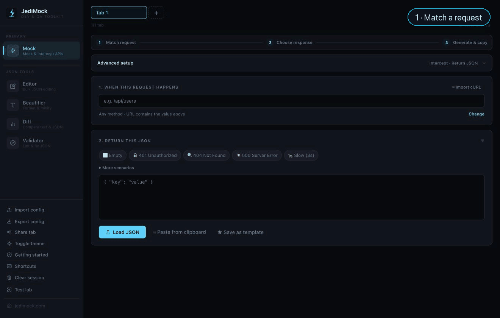

For frontend devs and QA engineers who can't wait on the backend
Mock any API response.
Directly in DevTools._
The backend isn't returning what you need. You can't change it. Configure the mock in JediMock, paste one script in the console. The next request is intercepted — no service worker, no proxy, no certificate, no cleanup. Zero footprint in your app. Zero trace when you're done.

When you need it
JediMock intercepts both fetch and XMLHttpRequest at the browser level —
no changes to your app, no service worker registered, no proxy process running.
Wildcards work: /api/users/* catches every user endpoint in one script.
Merge changes on top of the real response or replace it entirely.
Need more control? Response Rules let you return different data on specific call counts — 401 on the first hit, 200 after, exactly like a real auth retry flow. Perfect for QA regression scripts that need to reproduce the same sequence every time. Fallback mode fires the mock automatically if the server doesn't respond within your timeout. Async ID mode captures a job ID from a trigger request and replaces the placeholder in your polling response — no real callback server needed.
Refresh the page and the mock is gone. The real API comes back. Nothing to undo.
vs. MSW, Mockoon, Charles, Proxyman — for devs and QA
Five tools, one file, no account. Mock generator with tree-based JSON editor, bulk JSON editor with schema view and field history, validator with line-level error highlighting, diff, and beautifier. Import and export configs. Share a full mock via URL. Works in Chrome, Edge, and any Chromium-based browser — for frontend devs and QA engineers alike.